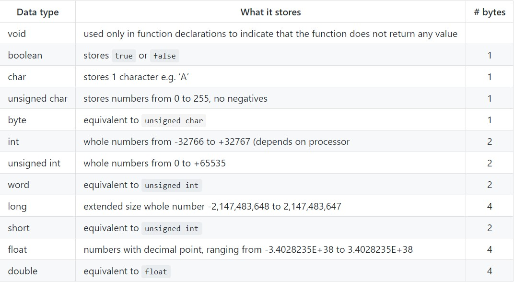
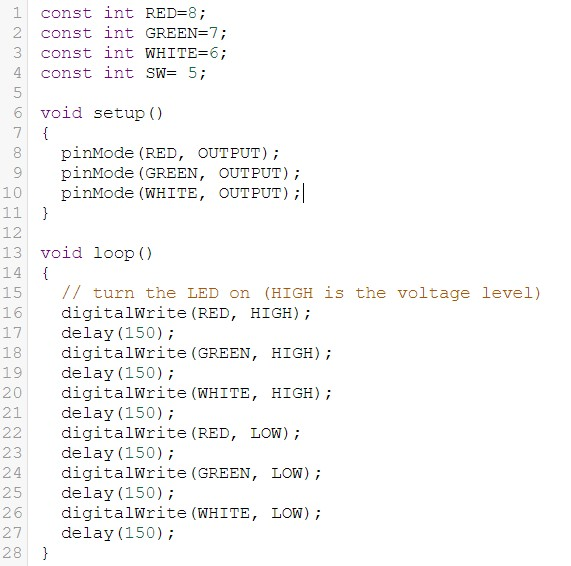
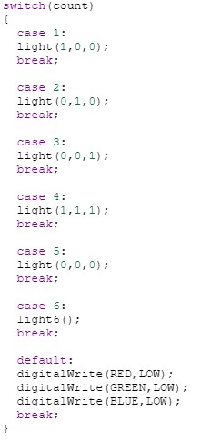
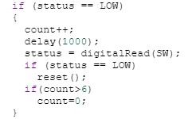

WEEK 9
Arduino Programming
Intro to Arduino
- Functions
- Structure
- Variables
Data Type
{kind=link}
Assignment 1 and 2 (without Switch)
Wiring with LEDs
{kind=link}
|  | Basic coding 1. Connect the circuit as the image above, once again do check the ground and voltage supply 2. Under code tab, choose "text" to start your arduino programming. 3. Loop with different pattern using delay and digitalWrite Mistake made One mistake i probably made was creating a function without a close bracket or whether have semicolon( ; ) at the end of the line. Arduino code for assignment 1 and 2 |
{kind=link}
Assignment 3 and 4 (With Switch)
Wiring with LEDs

|  | Switch Case Coding 1. Repeat the basic code steps, connections and start programming 2. Set int count = 0, we can use it as a counter to switch different cases, so if button press, count++ (++ = +1) 3. Again, loop with different pattern using delay and digitalWrite (create new funtion or define in the functions) |
|  | Rebounce Coding 1. After count++, place a delay to first, read again whether the switch is pressed or not 2. If is pressed, it will run "reset" function which it sets as all LEDs are off and count = 0, the delay use in the reset function use is forrebounce purpose. Arduino code for assignment 3 and 4 |
{kind=link}
{kind=link}